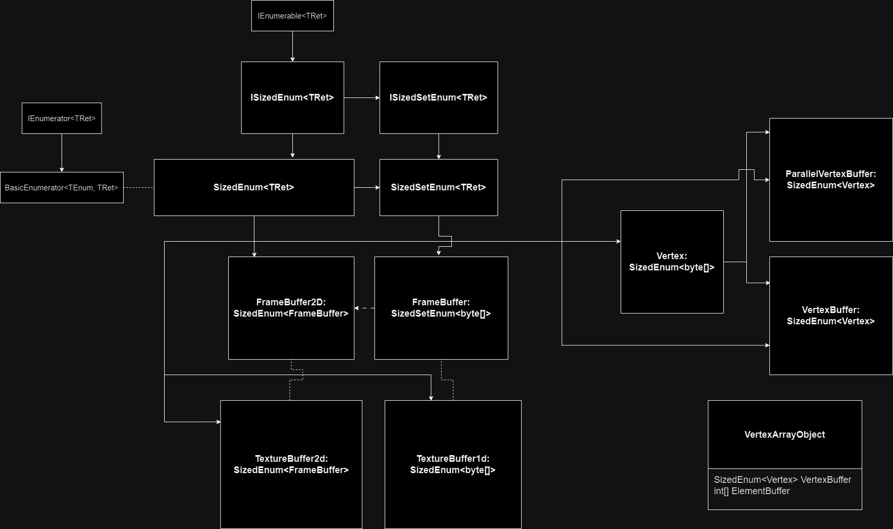

Buffers serve as a way to store the working data. They are used in rendering, depthbuffering, value initialization, texturing, etc. Here are the buffers in this project:
This might look like a Targaryen Family Tree, but it's not. Let me explain each part separately.
All of my buffers are descendants of these two classes. They are nothing special, but they are there only for me to easily have enumerable class, without the need of creating enumerator. I added these here just for you to be sure what they are, but in CPU renderer they do not serve higher purpose than just being a superclass of buffers.
Mostly used as being the buffers renderer renders to, but their usage is not limited to that.
Later you will see their usage in TextureBuffers, but their also very important usage is in depthbuffering.
Framebuffer being descendant of SizedSetEnum<byte[]>
and Framebuffer2D being a child class of the SizedEnum<Framebuffer>
makes them the best storage of 1D and 2D data.
They store the information of the size of one chunk(type stored) inside of that array and are able to return to you the correct data,
with the correct length.
VertexBuffer stores information about vertices of one 3D object. It is a descendant of SizedEnum<Vertex>, where Vertex is a descendant of SizedEnum<byte[]>. The most important part is that Vertex does not return data in the same sized chuncks. Instead, the VertexBuffer stores Stride (Information provided by users for vertex buffer to know how vertex data is structured) and returns data accordingly. It is used to specify vertices of 3D object and ShaderProgram reads from it the VertexShader input variables.
Similiar to VertexBuffer, but it stores the data in parallel arrays instead of one big array. It can be used the same way as normal VertexBuffer, but with different data management.
I use an Integer Array as an element buffer, since I found no reason to implement anything special for it. Element buffer is useful when we want to tell renderer how the vertices should be connected to triangles. As of now each 3 consequent numbers form a trinagle, where each number represents a vertex formed by data from the vertex buffer at the position of the vertex ID. Be careful to not use ID's of non-existent vertices since it can crash the program.
Although not a buffer, it is a place, where you combine your ElementBuffer and VertexBuffer. This Object can be then sent to shader program to be drawn.
I won't go into details, since both buffers have a specific implementation, but
these buffers are extension of classic framebuffers. On the outside, they behave the same way as framebuffer.
However, they have one additional method that makes them gamechanger for dealing with textures.
With method GetPixel(float key), they can wrap given keys and return filtered pixel.
So far keys can be clamped, repeated or reversed, when key is outside the bounds.
When it comes to filtering, the values can be filtered linearly(bi-linearly in 2D) or none at all.
Wrap modes and Filtering modes can be set using public methods on the buffer.